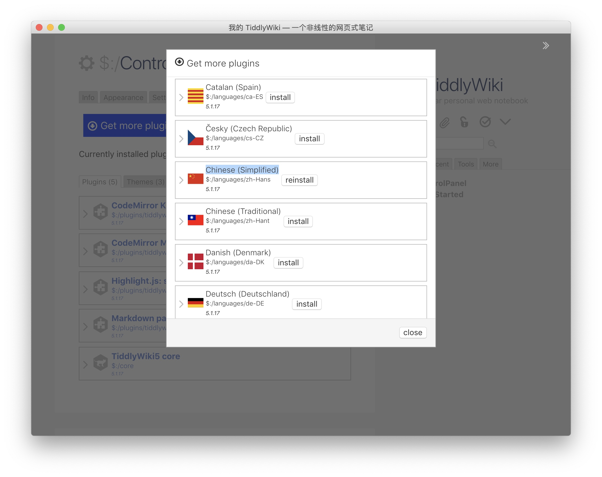
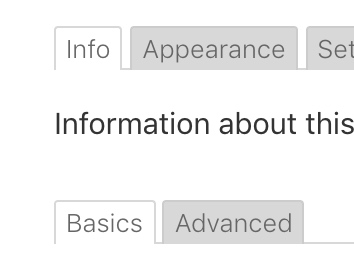
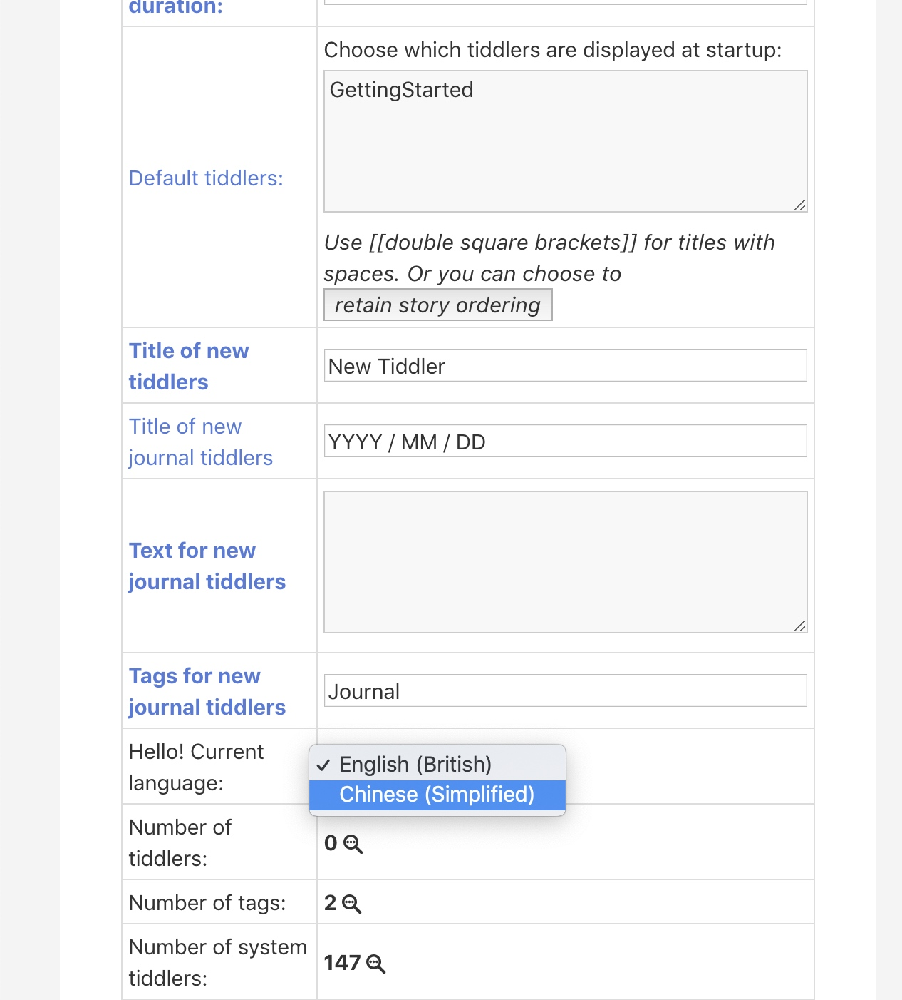

一个干净的模板已经是一个健全的维基系统了，但是如果我们还需要更加丰富的功能，或者更换想要的主题的话，就可以添加一些东西。
如果认为现在的空白模板已经够用，那么可以直接跳过看 2.1 TiddlyWiki使用教程。
简单设定
打开文档后，大概长这个样子(可能有些不一样，没关系)：
TiddlyWiki是左右分栏设计，如果窗口够窄，侧栏就会跑到上面去(手机上往往会这样)。左边是词条(知识卡片)，右边呢主要是各种辅助功能和导航条等。
先不用管 GettingStarted 页面，我们的任务是造一个足够满意的定制模板，以后使用这个模板就可以。
侧栏和工具栏调整
点击右侧边栏的Tools，选中以下几项：
- home
- new tiddler
- import
- save changes
- more
多选的项去掉，我感觉这样摆，放在外面的都是常用的，剩下的点击“更多”也能很方便的找到。
需要中文？点击 more 图标里面的 open control panel ，选择 Plugins - Get more plugins - Open plugin library - languages，找到 Chinese (Simplified)，安装。

随后到这里：

下拉找到 Hello! Current language: 选择。

按提示保存并刷新即可。
TiddlyWiki 是一个“我写我自己”的网页，每次作出更改，需要保存更改，有时候需要刷新才能看到效果。
视觉外观
之后的配置就不讲这么详细了，如何安装插件以及有哪些插件后面都会讲到，这里只说结果。
调色板
改用 Vanilla ，自定义配色以后再说。
工具栏
编辑器工具栏都选。
查看工具栏勾选：
- 更多
- 信息
- 导出此条目
- 编辑
- 关闭
主题调整
侧边栏布局 选 浮动故事，固定侧边栏
代码字型添加"Source Code Pro","Source Code Pro for powerline"
保存
通用
设置自动保存。
下载保存模块
允许。
TiddlySpot
输入网址、密码。
插件
安装：
- CodeMirror KeyMap: Sublime Text
- CodeMirror Mode: Markdown Highlighting
- Highlighting.js: syntax highlighting 语法高亮
- Markdown parser 让词条编辑可以使用 Markdown
KaTeX: mathematical typography 数学公式输入和排版- MathJax 不必多说，需要做一些小的修正才能更好使用
- tw5-checklist
- ToDoNow 很好的一个
- Listreveal ToDoNow依赖
- Reminders ToDoNow提醒
- EditorCounter & Autosaver 为编辑器添加字数统计和一定字数更改后自动保存 (原生自带了条目修改确认和删除操作时自动保存功能，去设置里开启即可)
- TiddlyMap 这个必须装！记得按照官方的安装教程来，否则容易翻车。
成果
点这里下载成果，这是一个较大，用于单个胜任复杂工作。较为精简轻便的版本稍后放出。